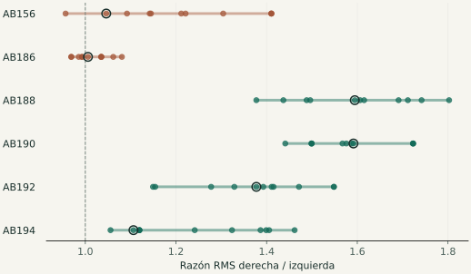
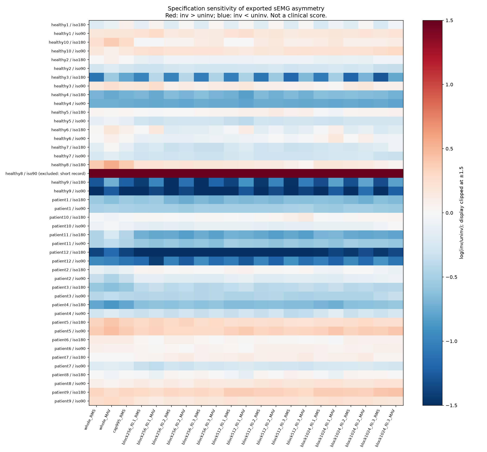

Verificar la fuente
Conservar originales, comprobar hashes e inventariar duración, reloj y metadatos. Una etiqueta «raw» no garantiza señal sin procesar.
CASO DE PORTFOLIO / BIOMECÁNICA & DATOS
Qué ocurre con la asimetría entre piernas cuando cambia la forma de resumir una señal muscular.
Auditoría reproducible de sEMG del vasto lateral. Datos abiertos, escenarios controlados y una extensión independiente.
Cada fila conserva la misma señal y cambia su resumen.

Pares persona–condición
Dryad · 22 personas · principal
Cruzan la razón de 1
Entre 21 especificaciones
Evaluaciones sintéticas
11 escenarios · 100 realizaciones · 21 métodos
01 / LA PREGUNTA
La sEMG registra actividad eléctrica en la superficie de la piel. Para comparar piernas podemos dividir sus amplitudes, pero una pausa, un pico o una ventana diferente puede cambiar el resultado.
Este proyecto pregunta cuánto depende esa descripción de las decisiones analíticas. Revisa integridad, escala, duración, filtros y selección temporal antes de interpretar diferencias.
Un cambio de dirección del cociente no demuestra una lesión, una diferencia clínicamente importante ni preparación para volver al deporte.
02 / EXPLORAR LA EVIDENCIA
Resultados guardados del protocolo ENABL3S v1.
Personas sanas caminando; cohorte separada de Dryad.
| Especificación | Derecha / izquierda | Log-razón |
|---|
AB185, AB189 y AB193 fueron excluidos por las reglas de anotación y longitud. AB191 es el piloto separado. Los bloques y los métodos no cuentan como personas adicionales.
03 / TRES MIRADAS COMPLEMENTARIAS
Figuras generadas por el proyecto.
Cada una responde a una pregunta diferente.

13 de 43 pares principales cruzan 1 entre 21 métodos; entre las once especificaciones RMS lo hacen 10. Las condiciones de una misma persona no son observaciones independientes.
04 / DECISIONES QUE SE PUEDEN AUDITAR
Conservar originales, comprobar hashes e inventariar duración, reloj y metadatos. Una etiqueta «raw» no garantiza señal sin procesar.
Comparar RMS, amplitud absoluta, selección temporal y perturbaciones. Mostrar decisiones retrospectivas y sus alternativas.
Los sintéticos revelan fallos frente a una referencia construida. Sus frecuencias no estiman prevalencias clínicas.
Piloto separado y reglas fijas antes de los otros nueve resultados. Marcha sana no equivale a validación clínica de ACLR.
healthy8/iso90 tiene un registro de solo 2 segundos frente a un compañero mucho más largo. Se apartó del principal y se conservó en sensibilidad. La decisión fue retrospectiva; no se borraron mediciones.
Sin una referencia independiente de función, una razón estable puede estar equivocada. Limitar picos ayuda en un escenario y puede borrar actividad deseada en otro. No se seleccionó un ganador por su apariencia.
Verifica resultados derivados y protocolo congelado, y regenera informe y figura. Recalcular amplitudes exige descargar los archivos originales y ejecutar el pipeline. Son niveles distintos de verificación.
05 / LO QUE DICE LA LITERATURA
12 fuentes seleccionadas · actualización 18 oct 2026.
Revisión crítica dirigida, sin pretensión de exhaustividad.
CEDE-Check · Besomi et al.
Tarea, electrodos, adquisición y procesamiento explícitos.
CEDE · Dick et al.
La inferencia mecánica depende del contexto y sus supuestos.
Cobian et al. · 30 atletas.
Un precedente longitudinal con desenlaces distintos de los nuestros.
Sherman et al. · depósito OSF.
Elegibilidad de archivos, músculo, torque y licencia aún pendiente.